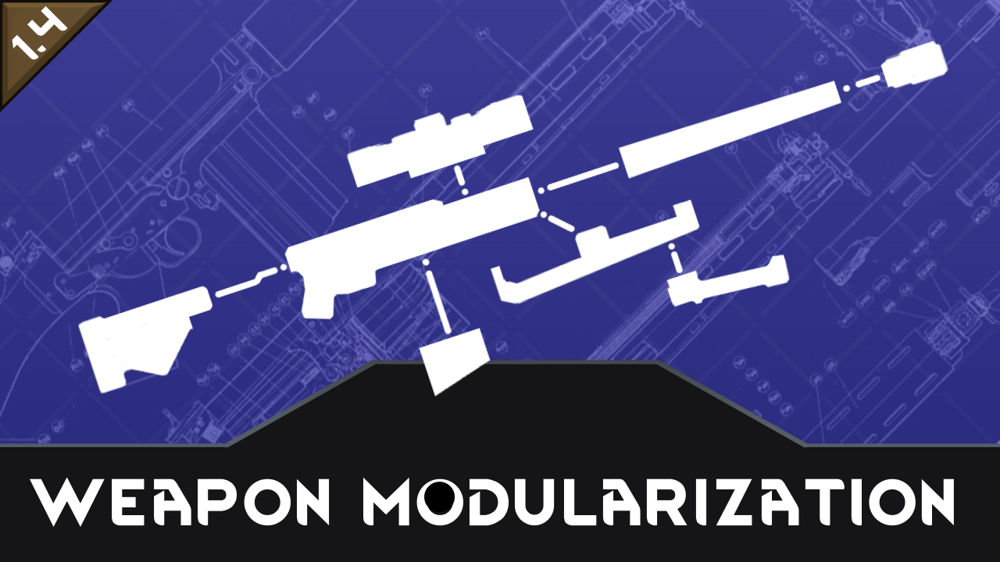

RW - Weapon Modularization
A mod for the game Rimworld, base by RW_NodeTree.
Allow to make the weapon consist by multi part
1 clone RW_NodeTree
git clone https://github.com/RW-NodeTree/RW_NodeTree.git
2 set environment variable RW_HOME to your RimWorld root. For example:
export RW_HOME="D:\SteamLibrary\steamapps\common\RimWorld"
3 Replace all path perfix with "D:\SteamLibrary\steama/RW_ModularizationWeapon\common\RimWorld" to yuor RimWorld root in RW_ModularizationWeapon/RW_ModularizationWeapon.csproj. For example:
from
<Reference Include="Assembly-CSharp">
<HintPath>D:\SteamLibrary\steamapps\common\RimWorld\RimWorldWin64_Data\Managed\Assembly-CSharp.dll</HintPath>
</Reference>
to
<Reference Include="Assembly-CSharp">
<HintPath>(Your RimWorld root)\RimWorldWin64_Data\Managed\Assembly-CSharp.dll</HintPath>
</Reference>
4 Replace all path perfix with "D:/SteamLibrary/steamapps/workshop" yuor RimWorld SteamLibrary WorkShop Root in RW_ModularizationWeapon/RW_ModularizationWeapon.csproj.
from
<Reference Include="0Harmony">
<HintPath>D:\SteamLibrary\steamapps\workshop\content\294100\2009463077\Current\Assemblies\0Harmony.dll</HintPath>
</Reference>
to
<Reference Include="0Harmony">
<HintPath>(Your RimWorld SteamLibrary WorkShop Root)\294100\2009463077\Current\Assemblies\0Harmony.dll</HintPath>
</Reference>
5 Now you can compile. And mod will auto copy to your RimWorld Mod Directory
Base Usage
This mod allow create weapon with traditional method and modify with Machining table or other Modify Port set in the mod. And also, some port probably will not allow to modify some weapon, that depand with moder set.
To modify weapon, select a colonist first, then right click Modify Port select Start Modify Weapon.